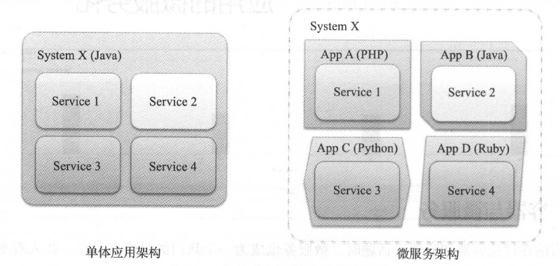
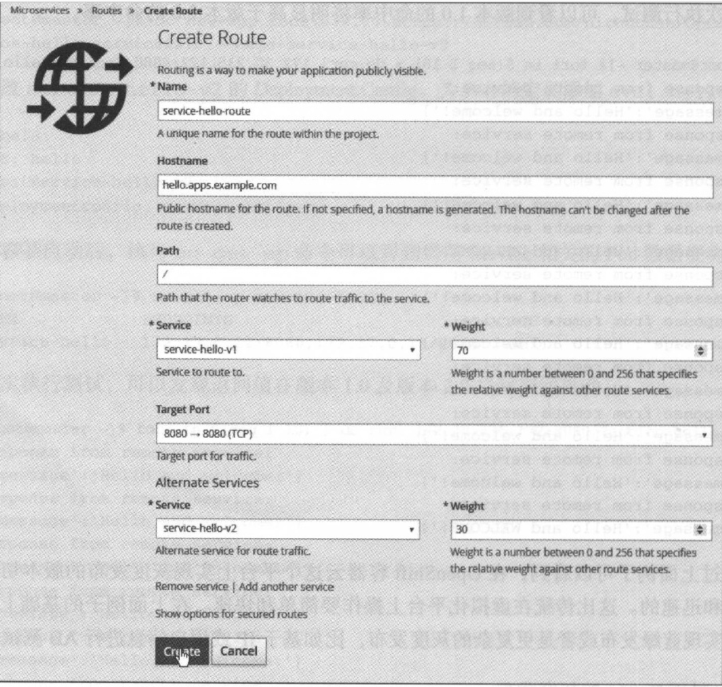

7. 应用的微服务化¶
7.1. 容器与微服务¶
当前在讨论容器和容器云话题时，微服务也成为一个热门的讨论点。在一些人看来微服务和容器是密不可分的。
7.1.1. 微服务概述¶
微服务（ microservice ）的核心理念就是将大的单体应用（ monolithic application ）拆散，形成多个相对较小的单体应用。这些单体应用可以独立进行开发、测试和部署，通过对这些单体应用的编排和组合最终提供完整的服务，如图7-1 所示。微服务将传统的应用架构化整为零，目的是提高应用开发和交付的效率。在传统的单体应用时代，虽然有模块的概念，但是在构建时，众多的模块往往会被构建成一个单一的、庞大的部署包。单体应用的更新往往导致整个系统的所有服务都中断。而在微服务的场景中，所有的功能都是由一个或多个服务提供的，当某个微服务进行更新和维护时，只会影响该服务涉及的业务，其他模块可以正常对外提供服务。微服务之间相对独立，它们各自可以有各自的开发周期，相互间不会有过强的捆绑关系，这样有助于加快系统整体迭代更新的节奏。从团队组织上来说，微服务的划分颗粒度较细，可以形成更有针对性的权责关系。
图7-1 单体应用架构与微服务架构
7.1.2. 微服务与容器¶
目前常见的一种迷思是“要使用微服务架构就要使用容器”，或者“使用容器就必须实现微服务架构” 。其实微服务和容器两者并没有强的捆绑关系。微服务和具体的语言和技术也没有直接的绑定关系。要实现微服务，不一定要使用容器。应用的微服务化，除了技术层面，还需要从开发团队的文化、组织架构着手。从技术层面看，容器具备在大规模云环境中快速部署复杂应用的能力，十分适合应用在微服务架构的场景中。反过来看，容器在未来成为云上的主流应用运行环境后传统的大型单体应用运行在容器中并不是一个很好的选择。未来的应用架构必须做出调整，让未来的应用更适合在容器内运行，在云上运行，甚至最终变成云的原生应用（ cloud native application ） 。微服务和容器是两个相辅相成的概念，它们的最终目的都是一致的，那就是提高应用开发、测试和部署的效率，让IT 变得更敏捷。
关于微服务的细节，完全足够再编写一本书来详细讨论，这里不过度展开。本章的焦点是在OpenShift容器云上部署运行微服务应用。我们会通过一些简单的微服务例子来探讨OpenShift如何有效地支持微服务架构落地。
Note
关于微服务的详细介绍，推荐参考Nginx客出品的系列文章： https://www.nginx.com/blog/introduction-to-microservices/ 。
7.2. 微服务容器化¶
微服务落实到最实处，其实就是应用。一个微服务可以用任何的编程语言实现。但是不管它是用哪种编程语言实现，最终都还是需要一个运行环境，如一个操作系统、一个Web 服务器、一个脚本解析器或者一个类似NM 的虚拟机。微服务享用容器和容器云提供的种种便利的一个前提条件就是，微服务需要被容器化。关于应用的容器化，在前面的章节进行了专门的讨论。虽然可以手工实现微服务的容器化，但是这样做是低效和不现实的。在企业大规模使用容器的场景中，企业必须建立一套微服务及应用容器化的自动化流程，通过自动化流程来规范应用容器化的过程以及提高应用容器化流程的效率和质量。
7.2.1. 基于现有的构建系统窑器化微服务¶
实现微服务应用容器化的自动化有多种途径。在前面的章节介绍了如何通过编写Dockerfile将一个Java 应用程序进行容器化。编写Dockerfile ，其实就已经将应用容器化的过程进行了固化。对于已经有构建自动化系统的用户，下一步往往是对其自动化构建系统稍作改造，在构建出原有的构建交付件后再接着触发一次Docker 构建，产生相应的微服务应用的容器镜像，并将镜像发布至相应的镜像仓库备用。例如，如果用户的团队现在已经在用Jenkins 进行代码的持续集成和部署，就可以在现有的基础上修改Jenkins 的配置，让Jenkins构建及发布应用的镜像。
7.2.2. 基于S2I容器化微服务¶
基于S2I 容器化微服务原理
Source to Image (S2I) 是OpenShift中应用容器化的标准流程。通过S2I 流程，用户可以很方便地把各种语言实现的微服务应用通过一个标准化的流程进行容器化。和其他应用的容器化一样，在微服务容器化过程中， S21 需要的最基本的输入只有两个： 一个是微服务的源代码仓库地址，另一个就是合适的Builder 镜像。S21 的自动化流程将负责微服务应用代码的编译、构建和部署，并最终生成可部署的微服务应用镜像。
与基于传统构建系统进行应用容器化相比，使用S2I 能更好地和OpenShift平台整合，实现起来也更加简洁。此外，更重要的是S2I 的构建是在容器化的环境中进行的。每一次构建S2I 都将实例化S2I Builder 镜像作为构建环境。通过S2I 的Builder 容器镜像，用户可以精细化地控制构建的环境，而且每次构建的环境可以保证高度一致。再者，每一次的构建都是在容器中进行，这些容器都将运行在OpenShift容器云平台之上，受到容器云平台的调度和管理，用户可以弹性地控制构建所需的计算资源。
许多团队都会有团队的构建服务器，多人共用的环境难免产生资源的冲突和争抢。目前有一些企业也在探索提供个人的构建和测试空间。即为面向所有的开发用户提供私有的隔离的应用构建和测试环境。作为一种轻量化的虚拟化技术，容器是实现个人级构建和测试空间的一个可行之选。
基于S2I 容器化微服务实例
图7-2 是本节将要部署的微服务例子的架构图。这个例子一共部署三个服务： Caller Service、Hello Service 和Goodbye Service 。通过传递不同的参数调用Caller Service, Caller Service 会分别调用Hello Service 或Goodbye Service ，并返回结果。
在OpenShift 中创建一个名为microservices 的项目。
[root@master /] # oc new-project microservices --display-name='Microservices'
部署Hello Service 与Goodbye Service 应用。Hello 和Goodbye Service 是两个由NodeJS实现的微服务应用。它们接受用户的请求，返回相应的字符串。
[root@master /]# oc new-app nodejs:0.10~https://github.com/nichochen/OpenShift-book-hello-service#1.0 --name=service-hello
[root@master / ]# oc new-app nodejs:0.10~https://github.com/nichochen/OpenShift-book-goodbye-service --name=service-goodbye
Note
如果用户足够细心，就会发现在部署Hello Service，源代码仓库地址的末尾带有#1.0 。这是指定部署Hello Service 的1.0 版本，从而为后面章节的讨论埋下伏笔。
图7-2 微服务架构示例
部署Caller Service。Caller Service 是一个PHP 应用。它会根据用户的输入调用Hello Service 或Goodbye Service ，并把结果返回给用户。
[root@master /]# oc new-app php:5.6~https://github.com/nichochen/OpenShift-book-caller-service/ --name=service-caller
oc new-app 为微服务应用创建了相应的BulidConfig 、Deployment Config 和Service 。 通过oc get svc ，可以看到Service 的相关信息。
[root@master /] # oc get svc
NAME TYPE CLUSTER-IP EXTERNAL-IP PORT(S) AGE
service-caller ClusterIP 172.30.68.213 <none> 8080/TCP,8443/TCP 32s
service-goodbye ClusterIP 172.30.254.25 <none> 8080/TCP 3m58s
service-hello ClusterIP 172.30.150.53 <none> 8080/TCP 7m10s
当所有的微服务容器启动完毕后就可以进行简单测试了。通过调用Caller Service 的地址加上URL 参数action=hello, Caller Service 将调用Hello Service 并返回字符串”Hello and welcome！”。
[root@master /]# curl 172.30.68.213:8080/?action=hello
Response from remote service:
{'message':'Hello and welcome!'}
Note
请注意替换下面的IP 地址至用户环境中的实际地址。
通过调用Caller Service 的地址加上参数action=goodbye, Caller Service 将调用Goodbye Service 并返回字符串”Goodbye and see you next time！”。
[root@master /] #curl 172.30.68.213:8080/?action=goodbye
Response from remote service:
{'message':'Goodbye and see you next time！'｝
微服务的实现可能涉及多种不同的技术和编程语言。OpenShift S2I 可以快速为不同编程平台实现的微服务提供标准化的容器镜像构建流程。
7.3. 服务部署¶
关于微服务的部署， 要着眼于两个层面：单个微服务的部署和微服务群的部署。在微服务架构中，完整的系统是由多个微服务的组合构成的。这意味着完成一次完整的系统部署， 涉及多个微服务的部署。一般而言，每个微服务提供不同的功能，完成不同的任务。因此，不同微服务的部署配置是不尽相同的。因为部署的复杂性，微服务的部署应以自动化为手段。在完成单个微服务部署的基础上，还需要进一步考虑如何高效地完成多个微服务的部署， 使一个个单独的微服务有机地构成一个完整的系统并对外提供服务。
7.3.1. 单个微服务的部署¶
在OpenShift 中，用户通过Deployment Config 作为容器部署定义描述对象，定义部署的容器的行为特性。通过Deployment Config，用户可以定义单个微服务的部署要求，如微服务的镜像、启动命令、系统环境变量、资源配额、数据持久化、健康检查、实例数量、所运行目标计算节点等。通过创建Deployment Config, OpenShift将根据要求容器化微服务并部署到集群中。
举一个常见的例子，每个微服务对资源的需求往往是不尽相同的。有的微服务属于联机事务处理型的应用，对内存的资源消耗会比较大，有的则可能属于联机事务分析型的应用，对CPU 的消耗比较大。在部署各种微服务时，应该根据当前微服务应用的特性，部署至合适的集群节点上。可以在Deployment Config 中定义NodeSelector （节点选择器），将相关微服务的容器实例调度到集群中内存资源比较充裕的计算节点上。
7.3.2. 多个微服务的部署¶
Deployment Config 可以灵活满足单个微服务的部署需求。对于多个微服务的部署，可以通过OpenShift 的Template （模板）来实现。如前文通过Template 一键部署了CakePHP 及MySQL应用。在Template 中，可以为不同的微服务定义各自的Deployment Config 、Service及Route 等资源对象。再者，通过Template 的参数功能，为服务的部署提供配置的途径。通过Template ，用户可以实现“一键式”部署，极大提高了工作效率。
在前面的例子中，我们部署了三个微服务应用。下面为这三个微服务应用创建一个模板，并将这个模板加入OpenShift的服务目录中。最终的结果是系统中的用户可以通过选择模板实现这个三个微服务的“一键式”部署。
通过oc export 命令，可以导出OpenShift中指定的对象。加上–as-template参数使导出的内容以模板的形式展现。命令执行完成后将在/tmp 目录下生成一个文件mysystem.json。
[root@master /]# oc get -o json --export bc,dc,svc,is > my-system.json
切换账户至集群管理员，并执行oc create 命令创建模板。注意模板要创建在openshift项目中，这样才可以被所有用户引用。
[root@master /]# oc login -u system:admin
[root@master /]# oc create -f /tmp/my-system.jso n -n openshift
template "my-system" created
此时，以dev 用户或其他用户登录Web 控制台，创建一个新的项目。单击Add to project 按钮，搜索my-system ，可以看到刚刚创建的模板。选择该模板可以实现一键部署前文部署的三个微服务。在实际的项目中，用户可以对模板进行更细致的定制，足更复杂的部署需求。关于模板定制的详细内容，请参考第14 章。
7.4. 服务发现¶
在微服务架构中的微服务并不是孤立的个体，服务之间是相五依赖的。A 服务可能会调用B 和C 服务的接口C 服务又可能依赖于D 服务。在传统的服务依赖模型中，各个服务的调用地址，如域名、IP 和端口在服务部署前就已经明确了。一般远程被调用的服务的调用地址会被写入调用方的配置文件中。和传统的模型不同，在云的环境中，所有的资源都是按需创建的，服务的域名、IP 和端口在服务创建时才会被分配，因此依赖信息不能事先写入配置文件中。这意味着应用要以一种全新的方式获取所依赖的服务的调用信息。
在前面的章节中介绍过OpenShift中一个重要的组件Service。一个Service 具有一个相对恒定的IP 地址，能为后端的一组Pod 容器分发流量。在OpenShift 中，一般会为每个需要被调用的应用关联一个或多个Service 对象。在同一个OpenShift 的项目中定义的所有Service 的访问信息，会被自动注入这个项目中的所有容器中。容器中的应用，只需通过所需调用的服务的名称，就可以从上下文环境变量中获取目标Service 的IP 地址和服务端口，从而避免手工修改服务连接信息。
7.5. 通过Service 进行服务发现¶
在本章的例子中， Caller Service 会调用到Hello Service 及Goodbye Service。但是Caller Service事先并不知道后端的服务地址。查看Caller Service 主页index.php 的代码，就可以看到Caller Service 是通过环境变量SERVICE_HELLO_SERVICE_HOST 及SERVICE_GOODBYE_SERVICE_HOST 获取后端服务的地址。
<?php
$hello_service = getenv('SERVICE_HELLO_SERVICE_HOST');
$goodbye_service = getenv('SERVICE_GOODBYE_SERVICE_HOST');
if ($_GET['action'] == 'hello')
$url = $hello_service;
else if ($_GET['action'] == 'goodbye')
$url = $goodbye_service;
else
$url = '';
if ($url != '' ){
$ch = curl_init();
curl_setopt($ch, CURLOPT_URL, $url . ":8080");
$response = curl_exec($ch);
curl_close($ch);
}else{
echo 'Invalid action.';
}
?>
SERVICE_HELLO_SERVICE_HOST 及SERVICE_GOODBYE_SERVICE_HOST 这两个环境变量是OpenShift根据当前项目的Service 信息自动生成并注人Caller Service 的容器中的。登录到容器内部，可以查看Service 相关的环境变量。通过这些环境变量，应用可以获取后端服务的相关连接信息。
[root@master ~ J# ocr sh service-caller-l-q733i
sh-4.2$ env |grep SERVICE
SERVICE_GOODBYE_SERVICE_PORT_8080_TCP=8080
SERVICE_GOODBYE_PORT=tcp://172.30.254.25:8080
SERVICE_HELLO_PORT_8080_TCP_ADDR=172.30.150.53
SERVICE_CALLER_SERVICE_PORT_8080_TCP=8080
SERVICE_HELLO_PORT=tcp://172.30.150.53:8080
SERVICE_HELLO_PORT_8080_TCP_PORT=8080
KUBERNETES_SERVICE_PORT=443
SERVICE_HELLO_SERVICE_PORT=8080
SERVICE_HELLO_SERVICE_HOST=172.30.150.53
KUBERNETES_SERVICE_HOST=172.30.0.1
SERVICE_GOODBYE_PORT_8080_TCP_PORT=8080
SERVICE_CALLER_SERVICE_PORT=8080
SERVICE_HELLO_PORT_8080_TCP_PROTO=tcp
SERVICE_CALLER_PORT_8443_TCP=tcp://172.30.68.213:8443
SERVICE_GOODBYE_PORT_8080_TCP=tcp://172.30.254.25:8080
SERVICE_CALLER_PORT=tcp://172.30.68.213:8080
SERVICE_GOODBYE_PORT_8080_TCP_PROTO=tcp
SERVICE_CALLER_PORT_8443_TCP_PROTO=tcp
SERVICE_HELLO_SERVICE_PORT_8080_TCP=8080
SERVICE_GOODBYE_SERVICE_PORT=8080
SERVICE_CALLER_PORT_8080_TCP_PORT=8080
SERVICE_CALLER_PORT_8080_TCP_ADDR=172.30.68.213
SERVICE_CALLER_PORT_8080_TCP=tcp://172.30.68.213:8080
SERVICE_GOODBYE_SERVICE_HOST=172.30.254.25
SERVICE_CALLER_PORT_8443_TCP_ADDR=172.30.68.213
SERVICE_CALLER_PORT_8080_TCP_PROTO=tcp
SERVICE_CALLER_SERVICE_HOST=172.30.68.213
SERVICE_CALLER_SERVICE_PORT_8443_TCP=8443
KUBERNETES_SERVICE_PORT_HTTPS=443
SERVICE_GOODBYE_PORT_8080_TCP_ADDR=172.30.254.25
SERVICE_HELLO_PORT_8080_TCP=tcp://172.30.150.53:8080
SERVICE_CALLER_PORT_8443_TCP_PORT=8443
7.5.1. 服务目录与链接¶
在OpenShift的项目路线图中，将会实现Service Catalog （ 服务目录） 和Service Linking（服务链接）功能，进一步加强集群内Service 的发现和调用。简单来说，通过Service Catalog实现全局的服务目录，可以在这个全局的目录发布服务和选取服务。通过Service Linking 功能，可以将需要的服务和容器应用对接。
7.6. 健康检查¶
因为每个微服务必须为它自身的状态负责，所以每个微服务都应提供一个健康检查的接口。通过调用这个健康检查接口，外界可以判断这个服务当前的状态。一般情况下， 并不是容器启动后容器中的应用就马上就绪了，应用一般还有一个启动或初始化的过程。因此，必须有一种手段让平台检查微服务应用的就绪状态。
7.6.1. Readniess 与Liveness¶
在OpenShift 的Deployment Config 中，用户可以定义两种检查： Readiness Probe 检查应用是否已经就绪； Liveness Probe 检查容器是否在正常运行。OpenShift 通过检查Readiness Probe接口，只有在确认服务就绪后，才会将外界的流量转发至服务。如果一个服务的Liveness Probe 探测结果返回失败，平台就会判定这个容器实例出现了问题，相应的容器会被停止。下面是一个Readiness Probe 及Liveness Probe 示例定义。initialDelaySeconds 参数指定了容器启动后多久开始启动相关的检查。timeout Seconds 指定了相关检查的超时时间。
"livenessProbe":{
"httpGet" :{
"path":"/?action=hello",
"port": 8080,
"scheme": "HTTP"
},
"initialDelaySeconds": 10,
"timeoutSeconds": 2,
"periodSeconds": 10,
"successThreshold": l,
"failureThreshold": 3
},
"readinessProbe":{
"httpGet": {
"path":"/?action=hello",
"port": 8080,
"scheme":"HTTP"
},
"initialDelaySeconds": 10,
"timeoutSeconds": 2,
"periodSeconds": 10,
"successThreshold": l,
"failureThreshold": 3
},
7.6.2. 健康检查类型¶
OpenShift默认支持三种类型的健康检查接口： HTTP GET 请求、执行容器命令及TCP Socker ，用户可以按需选择配置。
HTTP GET 请求
HTTP GET 请求类型的检查通过调用用户指定的URL 判别容器应用的状态。如果返回值为200 或399 ，则表示成功，否则认为失败。
下面是一HTTP GET 请求检查的示例，该检查调用容器的8080 端口上的路径”/health.php”来检查容器的状态。
......
"readinessProbe":{
"httpGet": {
"path":"/health.php",
"port": 8080
},
"initialDelaySeconds": 3,
"timeoutSeconds": 3,
},
......
执行容器命令
用户可以通过自行容器中的某个命令来确认容器的状态。如果程序的返回值为0 则表示成功，否则认定为失败。在下面的例子中，检查调用MySQL 客户端执行查询，以检查MySQL 服务的状态。
......
"readinessProbe":{
"timeoutSeconds": 1,
"initialDelaySeconds": 3,
"exec": {
"command":["/bin/sh","-i","-c","MYSQL_PWD=\"MYSQL_PASSWORD\" mysql -h 127.0.0.1 -u $MYSQL_USER -D $MYSQL_DATABASE -e 'SELECT 1'"]
}
},
......
TCP Socket
TCP Socket 检查访问容器的某一TCP 端口，如果成功建立连接，则认为检查成功，否则认为是失败。在下面的例子中，检查尝试与容器的3306 端口进行连接，从而判断容器中应用的状态是否正常。
......
"readinessProbe":{
"timeoutSeconds": 1,
"initialDelaySeconds": 30,
"tcpSocket": {
"port": 3306
},
},
......
7.7. 更新发布¶
完成上述一系列准备工作后，下面介绍应用更新发布的相关内容。
7.7.1. 滚动更新¶
将单体应用转化成一组微服务的一个优点是，每个微服务都可以有自己的生命周期。每个微服务开发团队可以有自己相对独立的版本节奏，各个团队可以根据自己的节奏发布版本。这也意味着应用的更新发布会变得更加频繁。微服务架构从架构上减少了系统整体服务停机的风险。每个微服务更新时，系统只有部分相关的功能受影响。
对于单个微服务而言， OpenShift 提供了滚动更新（ rolling update ）的机制，保证在服务更新的过程中服务不受影响。在滚动更新的过程中， OpenShift 先启动一定数量新版本的容器，在容器确认就绪后，再将老版本一定数量的容器停止。通过这个过程， OpenShift逐一替换和淘汰老版本的应用，从而实现更新的过程中服务不中断。
要观察滚动更新，首先需要将Hello Service 扩展至5 个实例以便观察。
[root@master ~ ] # oc scale dc service-hello --replicas=5
deploymentconfig "service-hello" scaled
接下来更新Hello Service 的Build Config 的源代码指向，将其指向版本2.0。执行oc edit be service-hello 命令。将ref 的属性值从1.0 修改为2.0 ，保存并退出。
source:
git :
ref ："2.0"
uri: https://github.com/nichochen/OpenShift-book-hello-service
执行一次新的构建。新的构建将下载Hello Service 2.0 版本的代码、产生新的镜像，并进行滚动更新部署。
[root@master ~] # oc start-build service-hello
service-hello-2
OpenShift 每次部署都会产生一个Kubernetes 的Replication Controller 对象。通过观察Replication Controller 对象，可以观察到OpenShift 滚动更新的过程。通过下面的输出可以看到service-hello-1 的Replication Controller 的容器实例数量在不断下降，与此同时service-hello-2 的Replication Controller 的容器实例数量在不断上升。在这个版本交替的过程中， OpenShift 会保证总是有容器实例在对外提供服务，保证服务不间断。
[root@master ~]# oc get rc |grep "hello|NAME"
NAME DESIRED CURRENT AGE
service-hello-1 5 5 lh
service-hello-2 0 0 ls
． ． 数秒后．
NAME DESIRED CURRENT AGE
service-hello-1 4 4 lh
service-hello-2 2 2 12s
．．数秒后． ． ．
NAME DESIRED CURRENT AGE
service-hello-1 2 2 lh
service-hello-2 3 3 19s
．．数秒后．．．
NAME DESIRED CURRENT AGE
service hello-1 0 0 1h
service-hello-2 5 5 31s
当部署结束后再次触发Caller Service 访问Hello Service。可以看到Hello Service 返回值中的字符串Welcome 变成了新版本中的返回值字符串WELCOME。
[root@master ~ l # curl 172.30.68.213:8080/?action=hello
Response from remote service:
{'message':'Hello and WELCOME!'}
7.7.2. 发布回滚¶
不一定每一次的发布都是顺利的，如果发布失败或者发布异常，必须有一套机制让用户可以快速回滚操作。发布的回滚是一项很实用的功能。OpenShift中每次部署都有相关的版本记录，用户可以快速回退到某一次的部署配置。 尝试回滚Hello Service ，将其回退到上一次的部署版本：版本1.0 。
[root@master ~]# oc rollback service-hello -to-version=1
#3 rolled back to service-hello-1
Warning: the following images triggers were disabled: service-hello:latest
You can re-enable them with: oc deploy service-hello --enable-triggers -n microservices
执行完毕后，再次触发Hello Service 。通过返回的消息可以看见， Hello Service 已经回到了1.0 了。用户会发现回退部署操作比较迅速，因为上一次部署的Hello Service 版本1.0的镜像已经存在于内部镜像仓库中，无须再次构建。
[root@master ~ ]# curl 172.30.68.213:8080/?action=hello
Response from remote service:
{'message':'Hello and welcome!'}
7.7.3. 灰度发布¶
灰度发布是当前非常流行的一种发布方式。用户在发布一个新版本应用服务时，并不完全替换所有老版本的应用服务实例，而是只替换一定的比例。这样避免因为新版本存在缺陷而导致所有的用户都受到影响。
基于Service 的灰度发布
在OpenShift中部署应用服务，一般会创建Service 。Service 将关联这个服务的所有容器实例。从原理上来说，在OpenShift的Service 是通过标签（ Label ）的方式与后端的Pod 相关联的。通过控制标签，可以控制Service 中老版本和新版本容器实例数量，从而实现灰度发布。
查看Hello Service 的Service 定义，可以看见Service 的Selector 定义如下：
selector:
app : service-hello
deploymentconfig: service-hello
上面定义了Service 将会关联到拥有app : service-hello 及deploymentconfig: service-hello 标签的Pod 。将这个Selector 定义修改为：
selector:
svc: hello
再次触发调用Hello Service 将会得不到返回值。因为目前系统中并没有带有svc: hello标签的Pod 存在。所以没有容器实例会响应处理这个请求。
[root@master ~]# curl 172.30.68.213:8080/?action=hello
Response from remote service:
执行oc get endpoint 命令可以看到Hello Service 的Service 没有关联任何Endpoint。 在下面命令的返回中， ENDPOINTS 的值为<none> ，即表示该Service 没有关联到任何容器。
[root@master ~]# oc get endpoint service-hello
NAME ENDPOINTS AGE
service-hello <none> 2h
为了方便实验，删除原有Hello Service 的Deployment Configuration ，与该DeploymentConfig 相关的Pod 也会被随之删除。
[root@master ~]# oc delete dc service service-hello
然后重新创建版本1.0 的Hello Service。
[root@master ~ ] # oc new-app nodejs:0.10~https://github.com/nichochen/OpenShiftbook-hello-service#1.O --name=service-hello-v1
通过oc edit dc service-hello-v1 修改Deployment Config 。在容器定义的标签定义部分，增加svc: hello标签。保存并退出后， OpenShift将自动重新部署， 生成新的容器。
labels :
svc: hello
app: service-hello-vl
deploymentconfig : service-hello-vl
这时候再次查看Service 的Endpoint 信息时，可以看见service-hello-v1 的Pod 已经与 Service 关联起来了。
[root@master ~]# oc get ep service-hello
NAME ENDPOINTS AGE
service-hello 172.17.0.12:8080 2h
再次测试，可以发现目前请求返回的为Hello Service 1.0 版本的返回。
[root@master ~]# curl 172.30.68.213:8080/?action=hello
Response from remote service:
{'message':'Hello and welcome!'}
接着开始灰度发布的关键步骤。创建一个Hello Service 2.0 版本的部署。
[root@master ~]# oc new-app nodejs:0.10~https://github.com/nichochen/OpenShiftbook-hello-service#2.0 --name=service-hello-v2
修改service-hello-v2 的Deployment Config ，为Pod 的定义添加svc: hello 标签。
labels:
svc: hello
app: service-hello-v2
deploymentconfig : service-hello-v2
待容器启动后，执行oc get ep 命令可以看到当前Service 相关的Pod 数量变为了2 。
[ root@master ~] II oc get ep service-hello
NAME ENDPOINTS AGE
service-hello 172.17.0.12:8080,172.17.0.13:8080 2h
多次执行测试，可以发现返回值在版本1.0及版本2.0之间来回抖动。
[root@master ~]# for i in $(seq 1 10) ; do curl 172.30.235.172:8080/?action=hello; done;
Response from remote service:
{'message':'Hello and welcome!'}
Response from remote service:
{'message':'Hello and welcome!'}
Response from remote service:
{'message':'Hello and welcome!'}
Response from remote service:
{'message':'Hello and WELCOME!'}
通过oc scale 命令对版本1.0 及版本2.0 的应用服务的容器实例的数量进行调整，从而实现版本1.0 的应用和版本2 .0 的应用在对外提供服务时的比例。当版本1.0 的容器数量为0 时， 即表示版本1.0 已经下线。通过下面的命令将版本1.0 的容器数量设置为8 ，版本2.0的容器数量设置为2。
[root@master ~]# oc scale dc service-hello-v1 --replicas=8
deploymentconfig "service-hello-v1" scaled
[root@master ~]# oc scale dc service-hello-v2 --replicas=2
deploymentconfig "service-hello-v2" scaled
再次执行测试，可以看到版本1.0 的命中率将明显高于版本2.0 的命中率。
通过上面例子可以看到，在OpenShift容器云这个平台上实现灰度发布的版本切换是非常方便和迅速的。这比传统在虚拟化平台上操作要简单和快速。在上面例子的基础上，用户还可以实现蓝绿发布或者是更复杂的灰度发布，比如基于IP 或用户信息进行AB 测试。
基于Route 的灰度发布
前面的例子通过将一个Service 关联多个Deployment Config 的容器实现了灰度发布。通过不同Deployment Config 的容器数量来控制Service 中不同版本服务的占比。
基于Service 的灰度发布使用了Kubernetes 的Service 实现。在OpenShift中，用户还可以基于Route 对象实现应用的灰度发布。在OpenShift 3.3以后支持一个Route 条目关联多个后端Service ，并为每个Service 设置分发的权重。这大大简化了灰度发布的实现。
比如在项目中创建两个不同版本的Hello Service 微服务。
[root@master ~]# oc new-app nodejs:0.10~https://github.com/nichochen/OpenShiftbook-hello-service#1.O --name=service-hello-vl
[root@master ~]# oc new-app nodejs:0.10~https://github.com/nichochen/OpenShiftbook-hello-service#2.0 --name=service-hello-v2
为这个两个Service 创建一个Route 。如图7-4 所示， 这个Route 关联了两个Service，分别 是service-hello-vl 和service-hello-v2 。两个服务的分发权重分别是70% 及30% 。
图7-4 创建关联多服务的Route
Route 创建成功后，在项目主页上service-hello-v1 和service-hello-v2 两个服务被组合在一起。
Router 支持多种分发策略，用户可通过为Route 添加注解指定分发策略。下面的例子中， Route 的转发规则被设备为轮询分发。
[root@master ~] # oc annotate route mybank "haproxy.router.openshift.io/balance=roundrobin"
7.8. 服务治理¶
大家对微服务的一个很大的关注点在于微服务的治理。用户希望能够清晰地掌握微服务的性能、调用分析及依赖关系等数据。这些数据的获取一般有两种方式： 一种通过设置API网关（ API Gateway）进行微服务访问的转发，实现对调用的度量统计、流量控制和安全管控； 另一种方式是借助微服务框架，在应用服务的代码或运行环境中加入探针，进行度量收集和行为控制。这两种方式前者是非入侵性的，后者则是入侵性的。
7.8.1. API 网关¶
目前市场上有不少API 网关的选择， 有开源的，也有商用的。许多API 网关平台也提供了容器镜像，这些镜像可以运行在容器云平台上，并被纳管起来。这里推荐一个开源的API网关APIMan。APIMan 是JBoss 开源社区的应用性能管理平台，同时也是一款出色的API Gateway 。APIMan 可以有效地对API 进行管理、度量采集、安全管控。APIMan 项目默认提供官方的容器镜像，可以以容器的方式快速部署到OpenShift 平台之上。通过oc new-app命令， 用户可以快速地部署APIMan 。
oc new-app apiman/on-wildfly10:l.2.7.Final
此外Red Hat 收购了APM 管理云平台3Scale ，相信很快3Scale 也会成为开源的产品和APIMan 项目进行整合。
7.8.2. 微服务框架¶
微服务框架和应用的捐合比较紧密，往往和开发平台有较强的相关性。就Java 平台而言，Netflix OSS 的微服务框架是当前比较流行的微服务框架之一。
基于Netflix OSS ，目前社区存在一个名为KubeFlix 的项目。KubeFlix 项目提供了Netflix OSS中Hystrix 、Turbine 和Ribbon 的镜像以及与Kubernetes 的服务发现的集成。KubeFlix项目适用于运行在OpenShift 上的Java 容器应用，其为应用提供了熔断器、流量控制、超时保护、度量采集和客户端负载均衡等特性。
7.9. 本章小结¶
本章探讨了微服务应用在OpenShift平台上的部署、运行和管理相关的话题。通过OpenShift提供的基础设施，微服务应用的容器构建、部署以及治理变得更加高效和有效。微服务的理念目前业界还在不断地丰富和完善，Openshift对微服务地支持也在不断地完善当中。